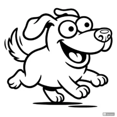

📊 No.1
豚のエピソード：犬以上の学習力を持つ認知能力
豚が示す驚くべき学習能力と問題解決スキル。犬との認知能力比較から見える、豚の実力の秘密とは。
動物の頭脳
豚

豚が持つ複雑な思考回路と学習能力について、最新の神経科学研究から解説。
紫外線も見える鶏の目。その独特な色彩認識が、行動にどう影響するのか。

犬の脳がどのようにして飼い主の顔を識別しているのか、脳研究から解明。

猫の複雑なコミュニケーション能力を行動学から深く探ります。
同じくらい高い知能を持つ豚と犬。その認知能力の違いを科学的に比較。
犬の超音波から象の極低周波まで。異なる音の世界を解説。